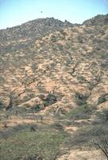
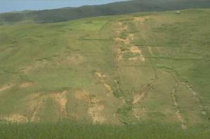

{kind=link}
{kind=link}
{kind=link}
{kind=link}
Introduction to soil degradation
|  |
| Erosion form overgrazed communal land: gully and sheet. Even with good tree bush cover, erosion is high (Kenya). |
| (c) Hanspeter Liniger, Berne, Switzerland (Reproduced from WOCAT, www.wocat.net)
|
| Soil degradation is a global process, but sub-Saharan Africa is affected most, with arid and semi-arid zones being particularly affected. Depletion of nutrients and soil organic matter and erosion are the principal forms of soil degradation. Overgrazing and cultivation practices that are not adapted to local environments are the principal causes of soil degradation. Overgrazing is often the result of the loss of pastures to agriculture. Producing crops without compensating the nutrient losses by removing plants also leads to soil degradation. The most prominent degradation feature worldwide is erosion by water. Various forms of chemical deterioration, such as soil fertility decline and soil pollution, and physical deterioration, such as compaction and water logging, account for smaller areas (Oldemann et al., 1990). The main impact of soil erosion is the reduction in soil quality which results from the loss of the nutrient-rich and fertile upper layers of the soil, and the reduced water-holding capacity of many eroded soils. In other words, 'Erosion removes the cream of the soil' (soilerosion.net). Therefore soil erosion is one of the most serious threats to soil fertility. Even low erosion rates which are almost invisible can over the years have a severe impact on soils. It is therefore of vital importance to protect the soil from erosion. Especially organic farming fully depends on maintaining the natural fertility of the soil. |
Types of soil degradation
| Soil erosion - Large rills on an eroding hill slope. |
| (c) Soil Erosion Site (www.soilerosion.net) |
Soil erosion describes the process of soil particles carried away by water or wind. Soil erosion can lead to unproductivity of the respective soil and, thus, render the soil unusable for agricultural production. Erosion is strongly related to human activity.
|  |
| Sheet and rill erosion in barley field (Ethiopia) |
| (c) Gudrun Schwilch, Berne, Switzerland (Reproduced from WOCAT, www.wocat.net) |
Water erosion
The rate and magnitude of soil erosion by water is controlled by the following factors (www.omafra.gov.on.ca):
- Rainfall Intensity and Runoff: The impact of raindrops on the soil surface can break down soil aggregates and disperse the aggregate material. Lighter aggregate materials such as very fine sand, silt, clay and organic matter can be easily removed by the raindrop splash and runoff water; greater raindrop energy or runoff amounts might be required to move the larger sand and gravel particles. Runoff can occur whenever there is excess water on a slope that cannot be absorbed into the soil or trapped on the surface. The amount of runoff can be increased if infiltration is reduced due to soil compaction, crusting or freezing. Runoff from the agricultural land may be greatest during spring months when the soils are usually saturated, snow is melting and vegetative cover is minimal. Gully and rill erosion are the dominant forms of water erosion. They provide flow paths for subsequent flows, and the gullies or rills are in turn eroded further. This process leads to the self-organized formation of networks of erosional channels. (www.soilerosion.net)
- Soil erodibility is an estimate of the ability of soils to resist erosion, based on the physical characteristics of each soil. Generally, soils with faster infiltration rates, higher levels of organic matter and improved soil structure have a greater resistance to erosion. Sand, sandy loam and loam textured soils tend to be less erodible than silt, very fine sand, and certain clay textured soils.
- Slope Gradient and Length: Naturally, the steeper the slope of a field, the greater the amount of soil loss from erosion by water. Soil erosion by water also increases as the slope length increases due to the greater accumulation of runoff.
- Vegetation: Plant and residue cover protects the soil from raindrop impact and splash, tends to slow down the movement of surface runoff and allows excess surface water to infiltrate.
Wind erosion
The rate and magnitude of soil erosion by wind is controlled by the following factors (www.omafra.gov.on.ca):
- Erodibility of Soil: Very fine particles can be suspended by the wind and then transported great distances. Fine and medium size particles can be lifted and deposited, while coarse particles can be blown along the surface (commonly known as the siltation effect).
- Soil Surface Roughness: Soil surfaces that are not rough or ridged offer little resistance to the wind. Excess tillage can contribute to soil structure breakdown and increased erosion.
- Climate: The speed and duration of the wind have direct relationship to the extent of soil erosion. Soil moisture levels can be very low at the surface during periods of drought, thus releasing the particles for transport by wind.
- Unsheltered Distance: The lack of windbreaks (trees, shrubs, residue, etc.) allows the wind to put soil particles into motion for greater distances thus increasing the abrasion and soil erosion. Knolls are usually exposed and suffer the most.
- Vegetative Cover: The lack of permanent vegetation cover in certain locations has resulted in extensive erosion by wind. Loose, dry, bare soil is the most susceptible. The most effective vegetative cover for protection should include an adequate network of living windbreaks combined with good tillage, residue management, and crop selection.
| Wind erosion in Eritrea |
| (c) Brigitta Stillhardt, Berne, Switzerland (Reproduced from WOCAT, www.wocat.net)
|
Chemical deterioration
Chemical deterioration involves loss of nutrients or organic matter, salinisation, acidification, soil pollution, and fertility decline. The removal of nutrients reduces the capacity of soils to support plant growth and crop production and causes acidification. In arid and semi-arid areas problems due to accumulation of salts can arise, which impedes the entry of water in plant roots. Soil toxicity can be brought about in a number of ways, but typical examples are from municipal or industrial wastes, oil spills, the excessive use of fertilizer, herbicides and insecticides, or the release of radioactive materials and acidification by airborne pollutants. While soil toxicity may be a relatively minor problem at present in Africa, it is likely to become of increasing importance in future years (Land and Plant Nutrition Management Service, 2002).
Physical deterioration
Physical deterioration involves soil crusting, sealing and compaction and can be caused by several factors like compaction through heavy machines or animals. It occurs in all continents, under nearly all climates and soil physical conditions. Soil crusting and compaction tend to increase runoff, decrease the infiltration of water into the soil, prevent or inhibit plant growth and leave the surface bare and subject to other forms of degradation. Severe crusting of the soil surface because of breakdown of soil aggregates can inhibit water entry into the soil and prevent seedling emergence (Land and Plant Nutrition Management Service, 2002).
Soil conservation measures
Certain conservation measures can reduce soil erosion. Soil / land management practices such as tillage and cropping practices, directly affect the overall soil erosion problem and solutions on a farm. When crop rotations or changing tillage practices are not enough to control erosion on a field, a combination of measures might be necessary. For example, contour plowing, strip cropping, or terracing may be considered.
Types of conservation measures:
- Agronomic: such as plant / soil cover, conservation farming methods, contour farming
- Vegetative: such as planting barriers (vegetative strips), live fences, windbreaks
- Structural: such as Fanya Juus, terraces, banks , bunds, cut off drains, barriers
- Overall management: such as area closures, selective clearing
For more examples and description of the conservation measures refer to coming sections.
Information Source Links
- International Institute of Rural Reconstruction (IIRR). Sustainable Agriculture Extension Manual. Available at www.iirr.org. Accessed on 13.8.2007
- Karl Herweg, (Education material): Managing Soil Fertility in the Tropics (Vol. 1-4)
- LADA - Land Degradation Assessements in Drylands. 2002. www.fao.org
- Land and Plant Nutrition Management Service. FAO-AGL 2002, MADS-SEA Network www.fao.org
- Oldeman L.R., Hakkeling R.T.A., Sombroek W.G. (1990) World map of the status of human induced soil degradation. An explanatory note. International Soil Reference and Information Centre, Wageningen, The Netherlands.
- Soil Erosion Site: www.soilerosion.net
- WOCAT - World Overview of Conservation Approaches and Technologies. www.wocat.net
- WOCAT, 2007. where the land is greener - case studies and analysis of soil and water conservation initiatives worldwide. Editors H.P. Liniger and W. Critchley. CTA, FAO, UNEP and CDE, University of Bern.